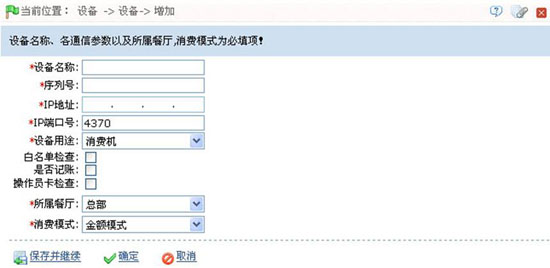
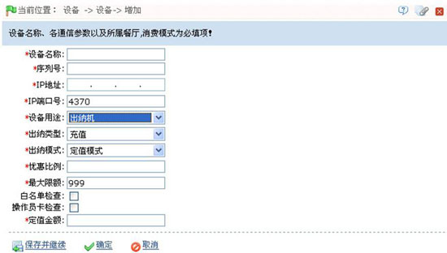
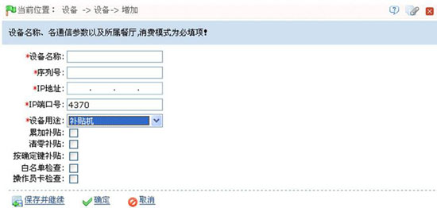
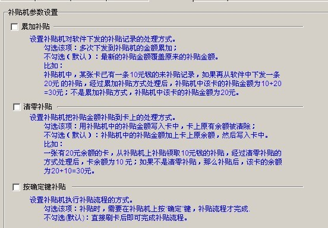
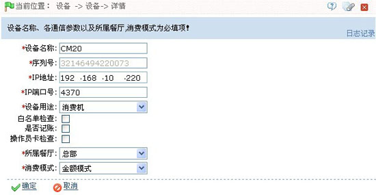
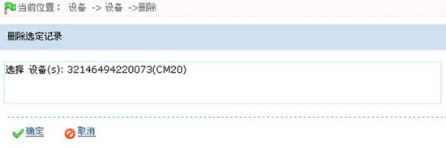

5.1 新增设备
1、单击窗口工具选择栏中的【新增】图标，进入如下图所示的新增设备页面：

设备名称：输入设备的名称。
序列号：输入设备底部标签上所示的序列号，序列号的位置如下图所示：

IP地址：输入设备使用的IP地址。
IP端口号：默认为4370，用户可根据实际情况进行修改。
设备用途：单击 按钮，在弹出的下拉列表中选择设备用途，可以选择为消费机、出纳机或补贴机。
按钮，在弹出的下拉列表中选择设备用途，可以选择为消费机、出纳机或补贴机。
- 选择为“消费机”时需设置如下参数
白名单检查：设置是否开启白名单检查。打勾选中即开启，开启后用户刷卡消费时，设备自动检查是否为白名单卡，若不是，则不能消费。
是否记账：设置是否开启记账功能。打勾选中即开启。
操作员卡检查：设置是否进行操作员卡检查。打勾选中即选中，开启后，开机消费时，须刷操作员卡，否则该设备无法正常消费。
所属餐厅：单击 按钮，在弹出的餐厅下拉列表中选择餐厅，餐厅的设置请参见6.2.3餐厅资料。
按钮，在弹出的餐厅下拉列表中选择餐厅，餐厅的设置请参见6.2.3餐厅资料。
消费模式：单击 按钮，在弹出的下拉列表中选择消费模式，可选择为金额模式、键值模式、定值模式、计时模式、计次模式或商品模式。
按钮，在弹出的下拉列表中选择消费模式，可选择为金额模式、键值模式、定值模式、计时模式、计次模式或商品模式。
- 选择为“出纳机”时需设置如下参数

出纳类型：单击 按钮，在弹出的下拉列表中选择出纳类型，可以选择为“充值”或“退款”。
按钮，在弹出的下拉列表中选择出纳类型，可以选择为“充值”或“退款”。
选择为“充值”模式时，需设置以下两项参数：
- 优惠比例：设置优惠比例。
- 最大限额：设置充值后，允许的最大卡余额，默认为999。
出纳模式：单击 按钮，在弹出的下拉列表中选择出纳模式，可以选择为“定值模式”或“金额模式”。
按钮，在弹出的下拉列表中选择出纳模式，可以选择为“定值模式”或“金额模式”。
白名单检查：设置是否开启白名单检查。打勾选中即开启，开启后用户刷卡消费时，设备自动检查是否为白名单卡，若不是，则不能消费。
操作员卡检查：设置是否进行操作员卡检查。打勾选中即选中，开启后，开机消费时，须刷操作员卡，否则该设备无法正常消费。
定值金额：设置定值金额。仅当出纳模式选择为“定值模式”时，才出现该设置项。
- 选择为“补贴机”时需设置如下参数

累加补贴、清零补贴、按确定键补贴：设置补贴的处理方式，具体设置方法和效果，如下图所述：

 备注：当用户同时选中累加补贴、清零补贴和按确定键补贴时，先清除卡里面的钱，再把累加的补贴金额充进卡里，然后按确定键，才算补贴成功。
备注：当用户同时选中累加补贴、清零补贴和按确定键补贴时，先清除卡里面的钱，再把累加的补贴金额充进卡里，然后按确定键，才算补贴成功。
白名单检查：设置是否开启白名单检查。打勾选中即开启，开启后用户刷卡消费时，设备自动检查是否为白名单卡，若不是，则不能消费。
操作员卡检查：设置是否进行操作员卡检查。打勾选中即选中，开启后，开机消费时，须刷操作员卡，否则该设备无法正常消费。
 注意：新增设备时需将设备连接至电脑，以便同步消费模式。
注意：新增设备时需将设备连接至电脑，以便同步消费模式。
2、设备信息设置完成后，若需继续添加则单击【保存并继续】按钮；若无需继续添加则单击【确定】按钮。并返回设备管理页面，此时该设备信息将显示在设备窗口的设备信息列表中。
 注意：新增完设备后，须重新启动该设备，同步设备消费模式。
注意：新增完设备后，须重新启动该设备，同步设备消费模式。
5.2 设备维护
设备管理包括了设备的编辑和删除，方便用户更好的管理设备信息。
1、设备的编辑
（1）、向右拖动设备信息列表下方的滚动栏，单击相关操作下方的【编辑】按钮，进入如下图所示设备信息编辑页面：

（2）、根据需要修改完设备信息后，单击【确定】按钮，保存修改后的设备信息，并返回设备管理页面。
 备注：用户修改设备信息后，系统会下发命令到该设备，让该设备及时更新信息。
备注：用户修改设备信息后，系统会下发命令到该设备，让该设备及时更新信息。
2、设备的删除
（1）、单击设备名称前面的选择框 ，打钩选中需要删除的设备。用户可同时选中多个设备进行操作，也可单击设备名称列名前面的选择框
，打钩选中需要删除的设备。用户可同时选中多个设备进行操作，也可单击设备名称列名前面的选择框 ，选中所有设备进行操作。
，选中所有设备进行操作。
（2）、选中设备后，直接单击设备信息显示列表中设备名称上方的【删除】按钮。或者向右拖动设备信息列表下方的滚动栏，单击相关操作下方的【删除】按钮，进入如下图所示的删除设备页面：

（3）、单击【确定】按钮，删除选中的设备，并返回设备管理页面，此时设备信息列表中将不再显示该条设备信息，即删除成功。
 备注：在设备管理页面中，用户还可以进行设备的查询与日志记录查看操作，具体方法请参见附录1 常用操作，此处不再重述。
备注：在设备管理页面中，用户还可以进行设备的查询与日志记录查看操作，具体方法请参见附录1 常用操作，此处不再重述。